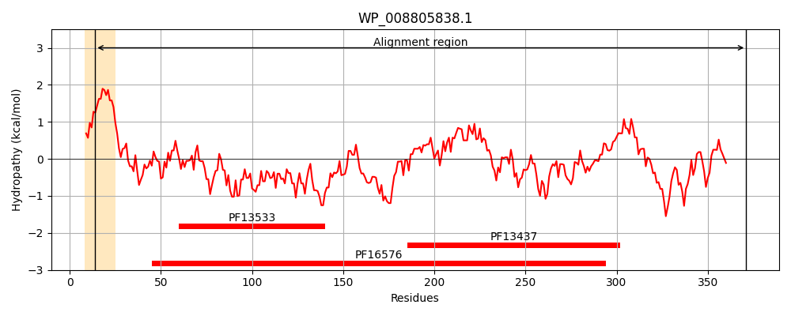
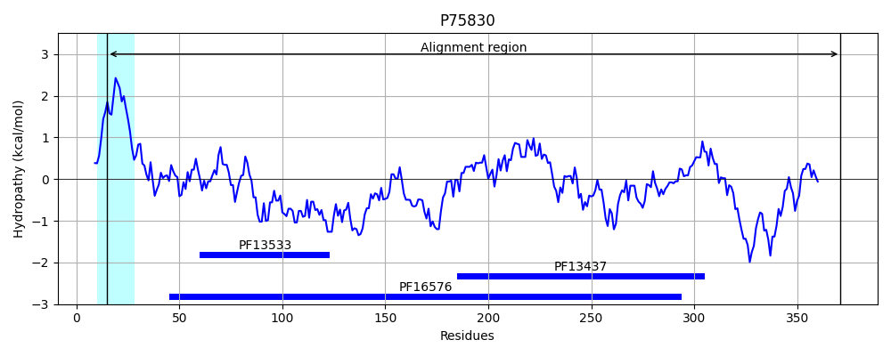
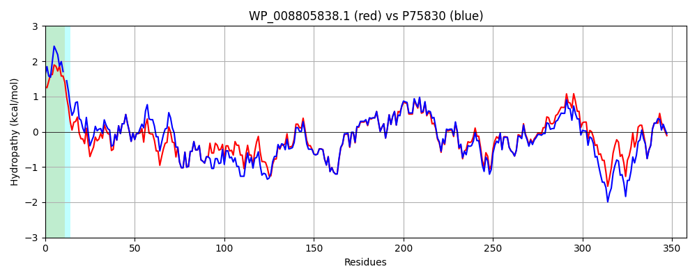

Hit Accession: P75830
Hit TCID: 3.A.1.122.1
Hit Description: gnl|BL_ORD_ID|11415 gnl|TC-DB|P75830|3.A.1.122.1 Macrolide-specific efflux protein macA - Escherichia coli (strain K12).
Mach Len: 358
e:0.000000
Query TMS Count : 1
Hit TMS Count: 1
TMS-Overlap Score: 0.850000
Predicted Substrates:CHEBI:6207;L-cysteine, CHEBI:25106;macrolide, CHEBI:4841;erythromycin A, CHEBI:23888;drug
BLAST Alignment:
Score: 1499 , Bit scores: 582 bits, E-value: 0.0e+00, Alignment length: 358, Percentage identity: 83
Query: 14 LAIVVLGLAVWGWRILNAPLPNYQTLVVRKGDLQQSVLATGKLDALRKVDVGAQVSGQLKTLHVNIGDKVKKDQLLGVIDPEQAQNQIKEVEATLMELRAQLNQARAESKLAQVTLARQQQLAQRQLVSRQDLDTAATDLAVKQAQIGTIEAQIKRNQATLDTAKTNLDYTRILAPMAGEVTQITTLQGQTVIAAQQAPNILTLADLSTMLVKAQVSEADVIHLRPGQKAWFTVLGDPLTRYEGTLKDILPTPEKVNDAIFYYARFEVPNPQGILRLDMTAQVHIQLAEVKNVITIPLSALGDAVGDNRYHVRLLRTGEVKEREVAIGARNDTDVAVVQGLDEGDEVIVGESASGAAK 371
L IV+ GL WRILNAP+P YQTL+VR GDLQQSVLATGKLDALRKVDVGAQVSGQLKTL V IGDKVKKDQLLGVIDPEQA+NQIKEVEATLMELRAQ QA AE KLA+VT +RQQ+LAQ + VS+QDLDTAAT++AVKQAQIGTI+AQIKRNQA+LDTAKTNLDYTRI+APMAGEVTQITTLQGQTVIAAQQAPNILTLAD+S MLVKAQVSEADVIHL+PGQKAWFTVLGDPLTRYEG +KD+LPTPEKVNDAIFYYARFEVPNP G+LRLDMTAQVHIQL +VKNV+TIPLSALGD VGDNRY V+LLR GE +EREV IGARNDTDV +V+GL+ GDEV++GE+ GAA+
Sbjct: 15 LVIVIAGLITL-WRILNAPVPTYQTLIVRPGDLQQSVLATGKLDALRKVDVGAQVSGQLKTLSVAIGDKVKKDQLLGVIDPEQAENQIKEVEATLMELRAQRQQAEAELKLARVTYSRQQRLAQTKAVSQQDLDTAATEMAVKQAQIGTIDAQIKRNQASLDTAKTNLDYTRIVAPMAGEVTQITTLQGQTVIAAQQAPNILTLADMSAMLVKAQVSEADVIHLKPGQKAWFTVLGDPLTRYEGQIKDVLPTPEKVNDAIFYYARFEVPNPNGLLRLDMTAQVHIQLTDVKNVLTIPLSALGDPVGDNRYKVKLLRNGETREREVTIGARNDTDVEIVKGLEAGDEVVIGEAKPGAAQ 371 | Protein Hydropathy Plots: |
|---|
|  |  |
Pairwise Alignment-Hydropathy Plot:
|
|---|
|  |